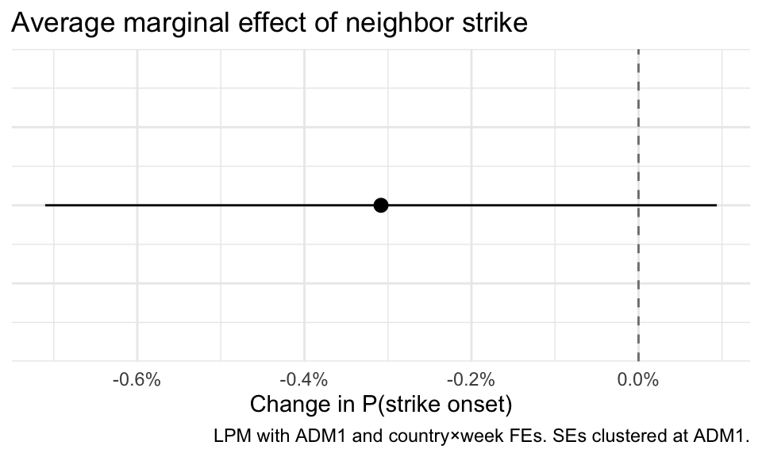
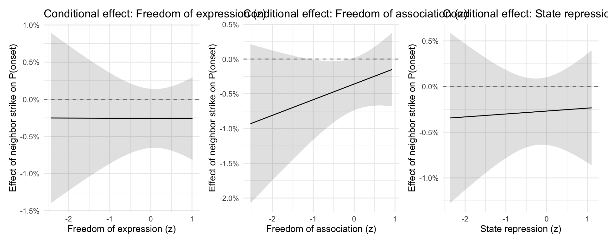

library(tidyverse)
library(lubridate)
library(arrow)
library(fixest)
library(modelsummary)
library(marginaleffects)
library(patchwork)
library(here)
conflicted::conflicts_prefer(dplyr::filter)
conflicted::conflicts_prefer(dplyr::lag)Contagion Analysis: Regression Models
Estimates the baseline LPM and institutional moderation models.
Specification: \[Y_{it} = \beta \cdot \text{NeighborStrike}_{i,t-1:t-2} + \alpha_i + \gamma_{c \times t} + \varepsilon_{it}\]
where \(\alpha_i\) are ADM1 fixed effects and \(\gamma_{c \times t}\) are country×week fixed effects. Standard errors clustered at the ADM1 level.
Requires: data/analysis/contagion_panel.parquet (from contagion-data-build.qmd)
Load data
panel <- read_parquet(here("data/analysis/contagion_panel.parquet"))
cat("Rows:", nrow(panel), "\n")Rows: 414965 cat("ADM1 units:", n_distinct(panel$gid_1), "\n")ADM1 units: 745 cat("Countries:", n_distinct(panel$gid_0), "\n")Countries: 136 cat("Weeks:", n_distinct(panel$week_start), "\n")Weeks: 557 # Restrict to observations with non-missing treatment and outcome
# (i.e., regions with at least one within-country neighbor)
analysis <- panel |>
filter(!is.na(neighbor_strike_within_t1_t2), !is.na(strike_onset))
cat("Analysis sample:", nrow(analysis), "ADM1-weeks\n")Analysis sample: 315808 ADM1-weekscat("Units dropped (no within-country neighbor or missing outcome):",
nrow(panel) - nrow(analysis), "\n")Units dropped (no within-country neighbor or missing outcome): 99157 Baseline model (H1: demonstration effect)
m_baseline <- feols(
strike_onset ~ neighbor_strike_within_t1_t2 | gid_1 + country_week,
data = analysis,
cluster = ~gid_1
)
summary(m_baseline)OLS estimation, Dep. Var.: strike_onset
Observations: 315,808
Fixed-effects: gid_1: 568, country_week: 41,144
Standard-errors: Clustered (gid_1)
Estimate Std. Error t value Pr(>|t|)
neighbor_strike_within_t1_t2 -0.003083 0.002051 -1.50297 0.1334
---
Signif. codes: 0 '***' 0.001 '**' 0.01 '*' 0.05 '.' 0.1 ' ' 1
RMSE: 0.114061 Adj. R2: 0.074395
Within R2: 3.001e-5Moderation models (H2–H4)
Each model adds one V-Dem institutional moderator and its interaction with the treatment. The moderators are standardized (z-scored) so the main effect of neighbor_strike_within_t1_t2 can be interpreted at the mean of the moderator.
# H2: Freedom of expression amplifies diffusion
m_freexp <- feols(
strike_onset ~ neighbor_strike_within_t1_t2 * freexp_z | gid_1 + country_week,
data = analysis,
cluster = ~gid_1
)NOTE: 21,584 observations removed because of NA values (RHS: 21,584).The variable 'freexp_z' has been removed because of collinearity (see
$collin.var).summary(m_freexp)OLS estimation, Dep. Var.: strike_onset
Observations: 294,224
Fixed-effects: gid_1: 568, country_week: 38,332
Standard-errors: Clustered (gid_1)
Estimate Std. Error t value Pr(>|t|)
neighbor_strike_within_t1_t2 -0.002578 0.002031 -1.269665 0.20472
neighbor_strike_within_t1_t2:freexp_z -0.000021 0.002176 -0.009647 0.99231
... 1 variable was removed because of collinearity (freexp_z)
---
Signif. codes: 0 '***' 0.001 '**' 0.01 '*' 0.05 '.' 0.1 ' ' 1
RMSE: 0.115328 Adj. R2: 0.07706
Within R2: 2.101e-5# H3: Freedom of association amplifies diffusion
m_frassoc <- feols(
strike_onset ~ neighbor_strike_within_t1_t2 * frassoc_z | gid_1 + country_week,
data = analysis,
cluster = ~gid_1
)NOTE: 21,584 observations removed because of NA values (RHS: 21,584).The variable 'frassoc_z' has been removed because of collinearity (see
$collin.var).summary(m_frassoc)OLS estimation, Dep. Var.: strike_onset
Observations: 294,224
Fixed-effects: gid_1: 568, country_week: 38,332
Standard-errors: Clustered (gid_1)
Estimate Std. Error t value Pr(>|t|)
neighbor_strike_within_t1_t2 -0.003593 0.001925 -1.86649 0.062489
neighbor_strike_within_t1_t2:frassoc_z 0.002253 0.002138 1.05368 0.292478
neighbor_strike_within_t1_t2 .
neighbor_strike_within_t1_t2:frassoc_z
... 1 variable was removed because of collinearity (frassoc_z)
---
Signif. codes: 0 '***' 0.001 '**' 0.01 '*' 0.05 '.' 0.1 ' ' 1
RMSE: 0.115327 Adj. R2: 0.077067
Within R2: 2.859e-5# H4: State repression dampens diffusion
m_repression <- feols(
strike_onset ~ neighbor_strike_within_t1_t2 * repression_z | gid_1 + country_week,
data = analysis,
cluster = ~gid_1
)NOTE: 21,584 observations removed because of NA values (RHS: 21,584).The variable 'repression_z' has been removed because of collinearity (see
$collin.var).summary(m_repression)OLS estimation, Dep. Var.: strike_onset
Observations: 294,224
Fixed-effects: gid_1: 568, country_week: 38,332
Standard-errors: Clustered (gid_1)
Estimate Std. Error t value
neighbor_strike_within_t1_t2 -0.002685 0.001893 -1.418008
neighbor_strike_within_t1_t2:repression_z 0.000320 0.002017 0.158768
Pr(>|t|)
neighbor_strike_within_t1_t2 0.15674
neighbor_strike_within_t1_t2:repression_z 0.87391
... 1 variable was removed because of collinearity (repression_z)
---
Signif. codes: 0 '***' 0.001 '**' 0.01 '*' 0.05 '.' 0.1 ' ' 1
RMSE: 0.115328 Adj. R2: 0.07706
Within R2: 2.124e-5Regression tables
models <- list(
"(1) Baseline" = m_baseline,
"(2) Expression" = m_freexp,
"(3) Association" = m_frassoc,
"(4) Repression" = m_repression
)
coef_labels <- c(
"neighbor_strike_within_t1_t2" = "Neighbor strike (t-1, t-2)",
"freexp_z" = "Freedom of expression (z)",
"frassoc_z" = "Freedom of assoc. (z)",
"repression_z" = "State repression (z)",
"neighbor_strike_within_t1_t2:freexp_z" = "Neighbor strike × Expression",
"neighbor_strike_within_t1_t2:frassoc_z" = "Neighbor strike × Association",
"neighbor_strike_within_t1_t2:repression_z" = "Neighbor strike × Repression"
)
rows <- tribble(
~term, ~"(1) Baseline", ~"(2) Expression", ~"(3) Association", ~"(4) Repression",
"ADM1 FE", "Yes", "Yes", "Yes", "Yes",
"Country × week FE", "Yes", "Yes", "Yes", "Yes"
)
attr(rows, "position") <- c(10, 11)
modelsummary(
models,
coef_map = coef_labels,
add_rows = rows,
stars = c("*" = .1, "**" = .05, "***" = .01),
gof_map = c("nobs", "r.squared"),
output = "gt"
)| (1) Baseline | (2) Expression | (3) Association | (4) Repression | |
|---|---|---|---|---|
| Neighbor strike (t-1, t-2) | -0.003 | -0.003 | -0.004* | -0.003 |
| (0.002) | (0.002) | (0.002) | (0.002) | |
| Neighbor strike × Expression | -0.000 | |||
| (0.002) | ||||
| Neighbor strike × Association | 0.002 | |||
| (0.002) | ||||
| Neighbor strike × Repression | 0.000 | |||
| (0.002) | ||||
| Num.Obs. | 315808 | 294224 | 294224 | 294224 |
| ADM1 FE | Yes | Yes | Yes | Yes |
| Country × week FE | Yes | Yes | Yes | Yes |
| R2 | 0.197 | 0.199 | 0.199 | 0.199 |
| * p < 0.1, ** p < 0.05, *** p < 0.01 | ||||
Marginal effects plots
H1: Average marginal effect of neighbor strike
avg_slopes(m_baseline, variables = "neighbor_strike_within_t1_t2") |>
tidy() |>
ggplot(aes(x = estimate, xmin = conf.low, xmax = conf.high, y = 1)) +
geom_pointrange() +
geom_vline(xintercept = 0, linetype = "dashed", color = "grey50") +
scale_x_continuous(labels = scales::percent_format(accuracy = 0.1)) +
labs(
title = "Average marginal effect of neighbor strike",
x = "Change in P(strike onset)",
y = NULL,
caption = "LPM with ADM1 and country×week FEs. SEs clustered at ADM1."
) +
theme_minimal() +
theme(axis.text.y = element_blank(), axis.ticks.y = element_blank())
H2–H4: Conditional effects across the distribution of each moderator
plot_conditional <- function(model, moderator, label) {
plot_slopes(
model,
variables = "neighbor_strike_within_t1_t2",
condition = moderator,
draw = FALSE
) |>
ggplot(aes(x = .data[[moderator]], y = estimate,
ymin = conf.low, ymax = conf.high)) +
geom_ribbon(alpha = 0.15) +
geom_line() +
geom_hline(yintercept = 0, linetype = "dashed", color = "grey50") +
scale_y_continuous(labels = scales::percent_format(accuracy = 0.1)) +
labs(
title = glue::glue("Conditional effect: {label}"),
x = label,
y = "Effect of neighbor strike on P(onset)"
) +
theme_minimal()
}
p_freexp <- plot_conditional(m_freexp, "freexp_z", "Freedom of expression (z)")
p_frassoc <- plot_conditional(m_frassoc, "frassoc_z", "Freedom of association (z)")
p_repression <- plot_conditional(m_repression, "repression_z", "State repression (z)")
library(patchwork)
p_freexp | p_frassoc | p_repression
Joint moderation model (H2–H4 together, ADM1 + week FEs)
The separate moderation models above use country×week FEs, which absorb the V-Dem moderators (annual, country-level) via collinearity. To identify the moderator main effects and interactions, we switch to ADM1 + week FEs and include all three moderators simultaneously. This trades some causal identification of the treatment for the ability to estimate the institutional interactions.
m_joint_mod <- feols(
strike_onset ~ neighbor_strike_within_t1_t2 * freexp_z +
neighbor_strike_within_t1_t2 * frassoc_z +
neighbor_strike_within_t1_t2 * repression_z | gid_1 + week_start,
data = analysis,
cluster = ~gid_1
)NOTE: 21,584 observations removed because of NA values (RHS: 21,584).summary(m_joint_mod)OLS estimation, Dep. Var.: strike_onset
Observations: 294,224
Fixed-effects: gid_1: 568, week_start: 518
Standard-errors: Clustered (gid_1)
Estimate Std. Error t value
neighbor_strike_within_t1_t2 0.013632 0.001712 7.961703
freexp_z 0.001385 0.002552 0.542634
frassoc_z -0.001231 0.002728 -0.451329
repression_z 0.000627 0.002160 0.290154
neighbor_strike_within_t1_t2:freexp_z -0.008689 0.004846 -1.793155
neighbor_strike_within_t1_t2:frassoc_z 0.009805 0.005236 1.872710
neighbor_strike_within_t1_t2:repression_z 0.002907 0.002081 1.397253
Pr(>|t|)
neighbor_strike_within_t1_t2 9.3107e-15 ***
freexp_z 5.8759e-01
frassoc_z 6.5192e-01
repression_z 7.7180e-01
neighbor_strike_within_t1_t2:freexp_z 7.3481e-02 .
neighbor_strike_within_t1_t2:frassoc_z 6.1623e-02 .
neighbor_strike_within_t1_t2:repression_z 1.6288e-01
---
Signif. codes: 0 '***' 0.001 '**' 0.01 '*' 0.05 '.' 0.1 ' ' 1
RMSE: 0.12338 Adj. R2: 0.079929
Within R2: 9.978e-4joint_coef <- c(
"neighbor_strike_within_t1_t2" = "Neighbor strike (t-1, t-2)",
"freexp_z" = "Freedom of expression (z)",
"frassoc_z" = "Freedom of assoc. (z)",
"repression_z" = "State repression (z)",
"neighbor_strike_within_t1_t2:freexp_z" = "Neighbor strike × Expression",
"neighbor_strike_within_t1_t2:frassoc_z" = "Neighbor strike × Association",
"neighbor_strike_within_t1_t2:repression_z" = "Neighbor strike × Repression"
)
joint_rows <- tribble(
~term, ~"Joint model",
"ADM1 FE", "Yes",
"Week FE", "Yes"
)
attr(joint_rows, "position") <- c(10, 11)
modelsummary(
list("Joint model" = m_joint_mod),
coef_map = joint_coef,
add_rows = joint_rows,
stars = c("*" = .1, "**" = .05, "***" = .01),
gof_map = c("nobs", "r.squared"),
output = "gt"
)| Joint model | |
|---|---|
| Neighbor strike (t-1, t-2) | 0.014*** |
| (0.002) | |
| Freedom of expression (z) | 0.001 |
| (0.003) | |
| Freedom of assoc. (z) | -0.001 |
| (0.003) | |
| State repression (z) | 0.001 |
| (0.002) | |
| Neighbor strike × Expression | -0.009* |
| ADM1 FE | Yes |
| Week FE | Yes |
| (0.005) | |
| Neighbor strike × Association | 0.010* |
| (0.005) | |
| Neighbor strike × Repression | 0.003 |
| (0.002) | |
| Num.Obs. | 294224 |
| R2 | 0.083 |
| * p < 0.1, ** p < 0.05, *** p < 0.01 | |
Robustness checks
Separate t-1 and t-2 lags
m_lag1 <- feols(
strike_onset ~ neighbor_strike_within_t1_t1 | gid_1 + country_week,
data = analysis,
cluster = ~gid_1
)
m_lag2 <- feols(
strike_onset ~ neighbor_strike_within_t2_t2 | gid_1 + country_week,
data = analysis,
cluster = ~gid_1
)NOTE: 568 observations removed because of NA values (RHS: 568).modelsummary(
list("t-1 only" = m_lag1, "t-2 only" = m_lag2, "Pooled t-1:t-2" = m_baseline),
coef_map = c(
"neighbor_strike_within_t1_t1" = "Neighbor strike (t-1)",
"neighbor_strike_within_t2_t2" = "Neighbor strike (t-2)",
"neighbor_strike_within_t1_t2" = "Neighbor strike (pooled)"
),
stars = c("*" = .1, "**" = .05, "***" = .01),
gof_map = c("nobs", "r.squared"),
output = "gt"
)| t-1 only | t-2 only | Pooled t-1:t-2 | |
|---|---|---|---|
| Neighbor strike (t-1) | -0.006** | ||
| (0.003) | |||
| Neighbor strike (t-2) | -0.001 | ||
| (0.002) | |||
| Neighbor strike (pooled) | -0.003 | ||
| (0.002) | |||
| Num.Obs. | 315808 | 315240 | 315808 |
| R2 | 0.197 | 0.197 | 0.197 |
| * p < 0.1, ** p < 0.05, *** p < 0.01 | |||
Logistic regression
m_logit <- feglm(
strike_onset ~ neighbor_strike_within_t1_t2 | gid_1 + country_week,
family = binomial,
data = analysis,
cluster = ~gid_1
)NOTE: 2/37,829 fixed-effects (256,969 observations) removed because of only 0 or only 1 outcomes or singletons.summary(m_logit)GLM estimation, family = binomial, Dep. Var.: strike_onset
Observations: 58,839
Fixed-effects: gid_1: 563, country_week: 3,315
Standard-errors: Clustered (gid_1)
Estimate Std. Error z value Pr(>|z|)
neighbor_strike_within_t1_t2 -0.057634 0.065979 -0.873522 0.38238
---
Signif. codes: 0 '***' 0.001 '**' 0.01 '*' 0.05 '.' 0.1 ' ' 1
Log-Likelihood: -12,169.8 Adj. Pseudo R2: 0.084732
BIC: 66,930.0 Squared Cor.: 0.273858Two-way clustering (ADM1 + country-week)
m_twoway <- feols(
strike_onset ~ neighbor_strike_within_t1_t2 | gid_1 + country_week,
data = analysis,
cluster = ~gid_1 + country_week
)
modelsummary(
list("ADM1 cluster" = m_baseline, "Two-way cluster" = m_twoway),
coef_map = c("neighbor_strike_within_t1_t2" = "Neighbor strike (t-1, t-2)"),
stars = c("*" = .1, "**" = .05, "***" = .01),
gof_map = c("nobs", "r.squared"),
output = "gt"
)| ADM1 cluster | Two-way cluster | |
|---|---|---|
| Neighbor strike (t-1, t-2) | -0.003 | -0.003 |
| (0.002) | (0.002) | |
| Num.Obs. | 315808 | 315808 |
| R2 | 0.197 | 0.197 |
| * p < 0.1, ** p < 0.05, *** p < 0.01 | ||
National vs. neighborhood contagion decomposition
The baseline LPM with country×week FEs yields a null treatment effect, while ADM1 + week FEs yield a positive effect (~1.5 pp). To understand why, we decompose the apparent neighborhood effect into:
- Country-level contagion: what share of other regions in the same country struck in \(t-1\) or \(t-2\)? (
country_share_t1_t2) — normalized by the number of regions so large countries do not mechanically score higher than small ones - Neighborhood-specific diffusion: does a geographic neighbor’s strike predict onset above and beyond the country-level signal?
# Number of ADM1 units per country
n_regions <- panel |>
distinct(gid_0, gid_1) |>
count(gid_0, name = "n_regions")
# Country-week total strike count, then lagged
country_weekly <- panel |>
group_by(gid_0, week_start) |>
summarize(country_strike_count = sum(strike_onset), .groups = "drop")
panel_decomp <- panel |>
left_join(n_regions, by = "gid_0") |>
left_join(country_weekly, by = c("gid_0", "week_start")) |>
arrange(gid_0, week_start) |>
group_by(gid_0) |>
mutate(
country_count_t1 = dplyr::lag(country_strike_count, 1),
country_count_t2 = dplyr::lag(country_strike_count, 2),
# Normalized share: proportion of other regions striking, averaged t-1:t-2
country_share_t1_t2 = ((country_count_t1 + country_count_t2) / 2) /
(n_regions - 1)
) |>
ungroup()
analysis_decomp <- panel_decomp |>
filter(
!is.na(neighbor_strike_within_t1_t2),
!is.na(strike_onset),
!is.na(country_share_t1_t2),
n_regions > 1
)
cat("Decomposition sample:", nrow(analysis_decomp), "ADM1-weeks\n")Decomposition sample: 315808 ADM1-weekscat("Mean country share striking:",
round(mean(analysis_decomp$country_share_t1_t2) * 100, 2), "%\n")Mean country share striking: 1.74 %cat("SD country share:", round(sd(analysis_decomp$country_share_t1_t2), 4), "\n")SD country share: 0.0509 # M1: country-level contagion only (share measure)
m_country <- feols(
strike_onset ~ country_share_t1_t2 | gid_1 + week_start,
data = analysis_decomp,
cluster = ~gid_1
)
summary(m_country)OLS estimation, Dep. Var.: strike_onset
Observations: 315,808
Fixed-effects: gid_1: 568, week_start: 556
Standard-errors: Clustered (gid_1)
Estimate Std. Error t value Pr(>|t|)
country_share_t1_t2 0.661995 0.050069 13.2216 < 2.2e-16 ***
---
Signif. codes: 0 '***' 0.001 '**' 0.01 '*' 0.05 '.' 0.1 ' ' 1
RMSE: 0.118066 Adj. R2: 0.136179
Within R2: 0.063366# M2: neighborhood contagion only (ADM1 + week FEs for comparability)
m_neighbor_aw <- feols(
strike_onset ~ neighbor_strike_within_t1_t2 | gid_1 + week_start,
data = analysis_decomp,
cluster = ~gid_1
)
summary(m_neighbor_aw)OLS estimation, Dep. Var.: strike_onset
Observations: 315,808
Fixed-effects: gid_1: 568, week_start: 556
Standard-errors: Clustered (gid_1)
Estimate Std. Error t value Pr(>|t|)
neighbor_strike_within_t1_t2 0.014875 0.001847 8.05347 4.7636e-15 ***
---
Signif. codes: 0 '***' 0.001 '**' 0.01 '*' 0.05 '.' 0.1 ' ' 1
RMSE: 0.121941 Adj. R2: 0.078538
Within R2: 8.668e-4# M3: both together — does geographic neighbor add anything beyond country wave?
m_decomp <- feols(
strike_onset ~ neighbor_strike_within_t1_t2 + country_share_t1_t2 |
gid_1 + week_start,
data = analysis_decomp,
cluster = ~gid_1
)
summary(m_decomp)OLS estimation, Dep. Var.: strike_onset
Observations: 315,808
Fixed-effects: gid_1: 568, week_start: 556
Standard-errors: Clustered (gid_1)
Estimate Std. Error t value Pr(>|t|)
neighbor_strike_within_t1_t2 -0.004269 0.002016 -2.11689 0.034704 *
country_share_t1_t2 0.665323 0.050667 13.13137 < 2.2e-16 ***
---
Signif. codes: 0 '***' 0.001 '**' 0.01 '*' 0.05 '.' 0.1 ' ' 1
RMSE: 0.118061 Adj. R2: 0.13624
Within R2: 0.063436decomp_models <- list(
"(1) Country" = m_country,
"(2) Neighbor" = m_neighbor_aw,
"(3) Decomposition" = m_decomp
)
decomp_coef <- c(
"neighbor_strike_within_t1_t2" = "Neighbor strike (t-1, t-2)",
"country_share_t1_t2" = "Country share striking (t-1, t-2)"
)
decomp_rows <- tribble(
~term, ~"(1) Country", ~"(2) Neighbor", ~"(3) Decomposition",
"ADM1 FE", "Yes", "Yes", "Yes",
"Week FE", "Yes", "Yes", "Yes"
)
attr(decomp_rows, "position") <- c(4, 5)
modelsummary(
decomp_models,
coef_map = decomp_coef,
add_rows = decomp_rows,
stars = c("*" = .1, "**" = .05, "***" = .01),
gof_map = c("nobs", "r.squared"),
output = "gt"
)| (1) Country | (2) Neighbor | (3) Decomposition | |
|---|---|---|---|
| Neighbor strike (t-1, t-2) | 0.015*** | -0.004** | |
| (0.002) | (0.002) | ||
| Country share striking (t-1, t-2) | 0.662*** | 0.665*** | |
| ADM1 FE | Yes | Yes | Yes |
| Week FE | Yes | Yes | Yes |
| (0.050) | (0.051) | ||
| Num.Obs. | 315808 | 315808 | 315808 |
| R2 | 0.139 | 0.082 | 0.139 |
| * p < 0.1, ** p < 0.05, *** p < 0.01 | |||
Exploratory: cross-border diffusion
Sample restricted to ADM1 units with at least one cross-border neighbor (~95 units). country×week FEs are appropriate here: the treatment is a foreign neighbor’s behavior, so it is not absorbed by the focal region’s country-week FE. Both country×week and ADM1 + week specs are shown for comparability.
cross_data <- analysis |> filter(!is.na(neighbor_strike_cross_t1_t2))
cat("Cross-border sample: ADM1 units =", n_distinct(cross_data$gid_1),
"| rows =", nrow(cross_data), "\n")Cross-border sample: ADM1 units = 109 | rows = 60604 # Country×week FE (treatment is foreign, FE controls own-country shocks)
m_cross_cw <- feols(
strike_onset ~ neighbor_strike_cross_t1_t2 | gid_1 + country_week,
data = cross_data,
cluster = ~gid_1
)NOTE: 0/7,784 fixed-effect singletons were removed (7,784 observations).# ADM1 + week FE (for comparability with main specs)
m_cross_aw <- feols(
strike_onset ~ neighbor_strike_cross_t1_t2 | gid_1 + week_start,
data = cross_data,
cluster = ~gid_1
)
summary(m_cross_cw)OLS estimation, Dep. Var.: strike_onset
Observations: 52,820
Fixed-effects: gid_1: 95, country_week: 12,232
Standard-errors: Clustered (gid_1)
Estimate Std. Error t value Pr(>|t|)
neighbor_strike_cross_t1_t2 0.000249 0.005104 0.048825 0.96116
---
Signif. codes: 0 '***' 0.001 '**' 0.01 '*' 0.05 '.' 0.1 ' ' 1
RMSE: 0.136859 Adj. R2: 0.085492
Within R2: 1.042e-7summary(m_cross_aw)OLS estimation, Dep. Var.: strike_onset
Observations: 60,604
Fixed-effects: gid_1: 109, week_start: 556
Standard-errors: Clustered (gid_1)
Estimate Std. Error t value Pr(>|t|)
neighbor_strike_cross_t1_t2 0.004179 0.004196 0.995972 0.32149
---
Signif. codes: 0 '***' 0.001 '**' 0.01 '*' 0.05 '.' 0.1 ' ' 1
RMSE: 0.144333 Adj. R2: 0.10769
Within R2: 3.901e-5joint_data <- analysis |>
filter(!is.na(neighbor_strike_within_t1_t2),
!is.na(neighbor_strike_cross_t1_t2))
# Within + cross-border, country×week FE
m_joint_cw <- feols(
strike_onset ~ neighbor_strike_within_t1_t2 + neighbor_strike_cross_t1_t2 |
gid_1 + country_week,
data = joint_data,
cluster = ~gid_1
)NOTE: 0/7,784 fixed-effect singletons were removed (7,784 observations).# Within + cross-border, ADM1 + week FE
m_joint_aw <- feols(
strike_onset ~ neighbor_strike_within_t1_t2 + neighbor_strike_cross_t1_t2 |
gid_1 + week_start,
data = joint_data,
cluster = ~gid_1
)
modelsummary(
list(
"Cross only (cw FE)" = m_cross_cw,
"Cross only (week FE)" = m_cross_aw,
"Joint (cw FE)" = m_joint_cw,
"Joint (week FE)" = m_joint_aw
),
coef_map = c(
"neighbor_strike_within_t1_t2" = "Neighbor strike within (t-1, t-2)",
"neighbor_strike_cross_t1_t2" = "Neighbor strike cross-border (t-1, t-2)"
),
stars = c("*" = .1, "**" = .05, "***" = .01),
gof_map = c("nobs", "r.squared"),
output = "gt"
)| Cross only (cw FE) | Cross only (week FE) | Joint (cw FE) | Joint (week FE) | |
|---|---|---|---|---|
| Neighbor strike within (t-1, t-2) | -0.009 | 0.013*** | ||
| (0.007) | (0.004) | |||
| Neighbor strike cross-border (t-1, t-2) | 0.000 | 0.004 | 0.000 | 0.004 |
| (0.005) | (0.004) | (0.005) | (0.004) | |
| Num.Obs. | 52820 | 60604 | 52820 | 60604 |
| R2 | 0.299 | 0.117 | 0.299 | 0.118 |
| * p < 0.1, ** p < 0.05, *** p < 0.01 | ||||
Validated locations only
Robustness check restricting to events where the ADM1 geocode was confirmed correct by the LLM validation step (geo_quality == "validated"). Unvalidated strike weeks are recoded as zero-strike weeks, keeping the balanced panel intact.
panel_val <- panel |>
mutate(
strike_onset_val = as.integer(geo_quality == "validated")
)
panel_val_decomp <- panel_decomp |>
mutate(
strike_onset_val = as.integer(geo_quality == "validated")
)
analysis_val <- panel_val |>
filter(!is.na(neighbor_strike_within_t1_t2))
analysis_val_decomp <- panel_val_decomp |>
filter(!is.na(neighbor_strike_within_t1_t2),
!is.na(country_share_t1_t2),
n_regions > 1)
cat("Validated outcome prevalence:",
round(mean(analysis_val$strike_onset_val) * 100, 2), "%\n")Validated outcome prevalence: 0.87 %cat("(vs.", round(mean(analysis$strike_onset) * 100, 2),
"% in full sample)\n")(vs. 1.65 % in full sample)m_val_baseline <- feols(
strike_onset_val ~ neighbor_strike_within_t1_t2 | gid_1 + country_week,
data = analysis_val,
cluster = ~gid_1
)
m_val_aw <- feols(
strike_onset_val ~ neighbor_strike_within_t1_t2 | gid_1 + week_start,
data = analysis_val,
cluster = ~gid_1
)
summary(m_val_baseline)OLS estimation, Dep. Var.: strike_onset_val
Observations: 315,808
Fixed-effects: gid_1: 568, country_week: 41,144
Standard-errors: Clustered (gid_1)
Estimate Std. Error t value Pr(>|t|)
neighbor_strike_within_t1_t2 -0.001671 0.001475 -1.13335 0.25755
---
Signif. codes: 0 '***' 0.001 '**' 0.01 '*' 0.05 '.' 0.1 ' ' 1
RMSE: 0.085882 Adj. R2: 0.016935
Within R2: 1.556e-5summary(m_val_aw)OLS estimation, Dep. Var.: strike_onset_val
Observations: 315,808
Fixed-effects: gid_1: 568, week_start: 556
Standard-errors: Clustered (gid_1)
Estimate Std. Error t value Pr(>|t|)
neighbor_strike_within_t1_t2 0.007632 0.001349 5.65753 2.4387e-08 ***
---
Signif. codes: 0 '***' 0.001 '**' 0.01 '*' 0.05 '.' 0.1 ' ' 1
RMSE: 0.090365 Adj. R2: 0.05199
Within R2: 4.157e-4m_val_decomp <- feols(
strike_onset_val ~ neighbor_strike_within_t1_t2 + country_share_t1_t2 |
gid_1 + week_start,
data = analysis_val_decomp,
cluster = ~gid_1
)
modelsummary(
list(
"Full sample\n(country×week)" = m_baseline,
"Full sample\n(week FE)" = m_val_aw,
"Validated\n(country×week)" = m_val_baseline,
"Validated\n(week FE)" = m_val_aw,
"Validated\ndecomp" = m_val_decomp
),
coef_map = c(
"neighbor_strike_within_t1_t2" = "Neighbor strike (t-1, t-2)",
"country_share_t1_t2" = "Country share striking (t-1, t-2)"
),
stars = c("*" = .1, "**" = .05, "***" = .01),
gof_map = c("nobs", "r.squared"),
output = "gt"
)| Full sample (country×week) | Full sample (week FE) | Validated (country×week) | Validated (week FE) | Validated decomp | |
|---|---|---|---|---|---|
| Neighbor strike (t-1, t-2) | -0.003 | 0.008*** | -0.002 | 0.008*** | -0.001 |
| (0.002) | (0.001) | (0.001) | (0.001) | (0.001) | |
| Country share striking (t-1, t-2) | 0.305*** | ||||
| (0.027) | |||||
| Num.Obs. | 315808 | 315808 | 315808 | 315808 | 315808 |
| R2 | 0.197 | 0.055 | 0.147 | 0.055 | 0.078 |
| * p < 0.1, ** p < 0.05, *** p < 0.01 | |||||
Save model objects
out_dir <- here("outputs/models/contagion")
# Main paper models
saveRDS(m_baseline, file.path(out_dir, "m_baseline.rds"))
saveRDS(m_country, file.path(out_dir, "m_country.rds"))
saveRDS(m_neighbor_aw, file.path(out_dir, "m_neighbor_aw.rds"))
saveRDS(m_decomp, file.path(out_dir, "m_decomp.rds"))
saveRDS(m_freexp, file.path(out_dir, "m_freexp.rds"))
saveRDS(m_frassoc, file.path(out_dir, "m_frassoc.rds"))
saveRDS(m_repression, file.path(out_dir, "m_repression.rds"))
saveRDS(m_joint_mod, file.path(out_dir, "m_joint_mod.rds"))
# Robustness
saveRDS(m_lag1, file.path(out_dir, "m_lag1.rds"))
saveRDS(m_lag2, file.path(out_dir, "m_lag2.rds"))
saveRDS(m_logit, file.path(out_dir, "m_logit.rds"))
saveRDS(m_twoway, file.path(out_dir, "m_twoway.rds"))
# Validated-only
saveRDS(m_val_baseline, file.path(out_dir, "m_val_baseline.rds"))
saveRDS(m_val_decomp, file.path(out_dir, "m_val_decomp.rds"))
# Cross-border diffusion
saveRDS(m_cross_cw, file.path(out_dir, "m_cross_cw.rds"))
saveRDS(m_cross_aw, file.path(out_dir, "m_cross_aw.rds"))
saveRDS(m_joint_cw, file.path(out_dir, "m_joint_cw.rds"))
saveRDS(m_joint_aw, file.path(out_dir, "m_joint_aw.rds"))
cat("Models saved to", out_dir, "\n")Models saved to /Users/ejt/Library/CloudStorage/Dropbox/projects/gdelt-strikes/outputs/models/contagion